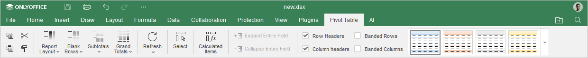
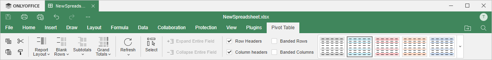

Kartica Pivot Table
Kartica Pivot Table u Spreadsheet Editor-u omogućava kreiranje i uređivanje pivot tabela.
Počevši od verzije ONLYOFFICE Docs 8.2, kartica Pivot Table je podrazumevano sakrivena i otvara se samo tokom rada sa pivot tabelama.
Odgovarajući prozor Online Spreadsheet Editor-a:

Odgovarajući prozor Desktop Spreadsheet Editor-a:

Pomoću ove kartice možete:
- kreirati novu pivot tabelu,
- izabrati odgovarajući raspored za pivot tabelu,
- ažurirati pivot tabelu ako promenite podatke u izvornom skupu podataka,
- izabrati celu pivot tabelu jednim klikom,
- proširivati ili skupljati polja radi prikazivanja ili sakrivanja detalja stavki pivot tabele,
- istaći određene redove/kolone primenom posebnog stila formatiranja,
- izabrati jedan od unapred definisanih stilova tabela.